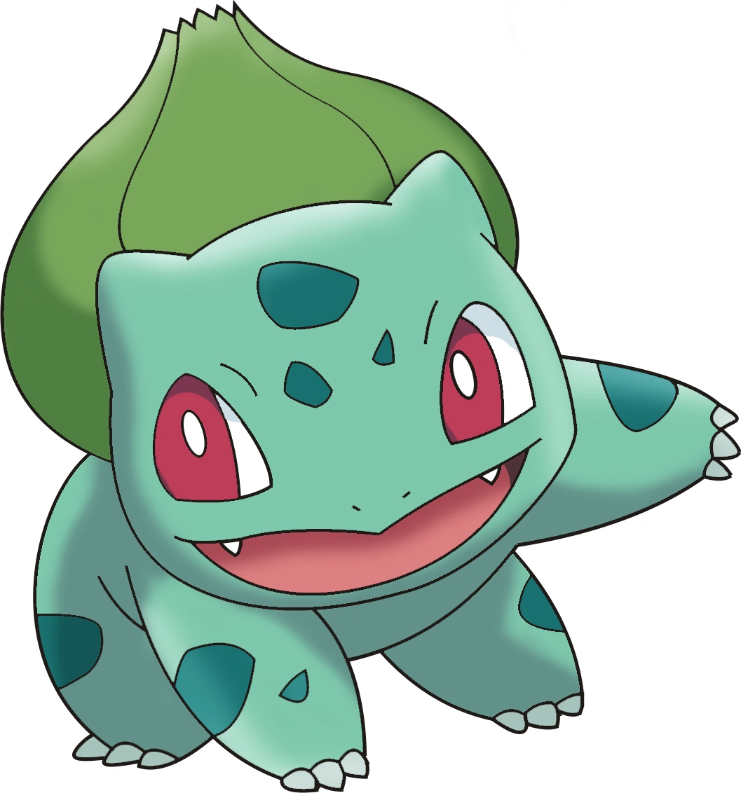

Voltar ao Home
Bulbasaur

Áudio: bulbasssauro falando
Vídeo: bulbassauro friends
Informações:
Bulbasaur é um Pokémon do tipo planta, conhecido por sua aparência fofa e suas habilidades vegetais. Ele é o mascote da franquia Pokémon e é famoso por sua amizade com o protagonista Ash Ketchum na série de anime. Bulbasaur evolui de Bulbassauro quando atinge um alto nível de amizade e pode evoluir para Venusaur quando exposto a uma Pedra do Sol. Ele é conhecido por seu ataque característico, o "Lança-Grama", que pode crescer e proteger seus oponentes. Bulbasaur é um dos Pokémon mais populares e reconhecíveis, sendo um ícone cultural em todo o mundo.